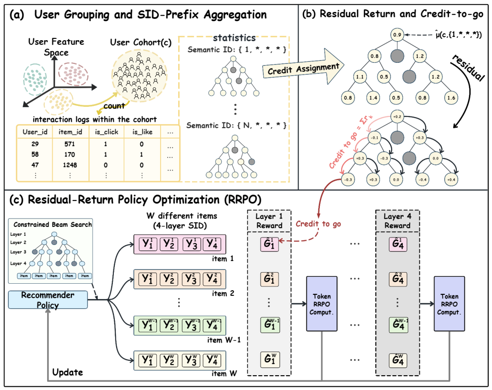

Hierarchical Residual Policy Optimization for Generative Recommendations (面向生成式推荐的分层残差策略优化)
- 会议/期刊: KDD 2026 (Research Track)
- 作者与机构: Kaifeng Guo, Jingtong Gao, Xiangyu Zhao (CityU HK)；Yiming Yang, Fukang Yang, Yukang Liang, Peng Jiang, Qingpeng Cai (快手)
- 推荐链路定位: 端到端生成式（SID 自回归解码的后训练阶段）
- 研究方向: 生成式推荐与离散语义ID / 强化学习与动态探索推荐
- 论文原文: arXiv:2608.00750v1
- 开源代码: KDD2026-HRPO
TL;DR (1分钟核心速览)
SID 生成式推荐器用 next-token 模仿日志轨迹，与下游效用错位；而日志反馈只在完整 SID 路径生成后（即曝光物品）才被观测，现有后训练方法（DPO/GRPO/SPRec）把同一终端奖励广播到所有 token，导致信用稀疏、高方差且层间不可比。HRPO 先用特征分群平滑出 SID 前缀效用，再沿 trie 做残差分解得到 token 级 credit-to-go，最后用 RRPO（clip + 组内归一化优势 + KL 信任域）保守更新。KuaiSim 会话级 Total reward 从 8.137 提升至 10.528（+29.4%），线上 IAA 三流量段 Target Cost 全正。
Background & Motivation (背景与核心矛盾)
- 主流范式: TIGER 类方法用 RQ-VAE/trie 把物品编码为定长 SID，SFT 最大化日志 SID 轨迹的 next-token 似然，再做 DPO/GRPO 类偏好后训练。
- 前人局限: ① 大量物品共享早期 SID 前缀、仅在深层分叉，把终端奖励均匀广播到全路径会在共享前缀上产生无区分甚至冲突的梯度；② 前缀条件信用在不同深度上量纲与方差差异巨大，直接喂给 PPO 式更新会不稳定。
- 核心洞察 (Key Insight): 日志虽只给终端物品反馈，但 SID trie 天然提供粗到细的层级结构——前缀效用可被聚合估计，物品级结果可望远镜式分解为逐层边际增益，从而把稀疏终端信号"致密化"为位置对齐的 token 信号。
- 本文切入点: 用"分群平滑前缀效用 → 残差信用 → credit-to-go → 保守 token 级 PPO"四步，把 item-level outcome 转成 layer-aware 的 token 级学习信号。
Method (核心方法设计)
1. 整体框架 (Overall Architecture)
输入为日志记录 \((u_i,x_i,y_i,r_i)\)（\(y_i=\phi(v_i)\) 为 SID 路径，\(r_i=\sum_m w_m b_{i,m}\) 为多目标标量化效用）与一个 SFT 初始化的 SID 解码器。HRPO 分三阶段闭环：(a) 用固定特征映射 \(c(u)=g(u)\) 把用户分群，在 SID trie 上聚合各前缀的效用统计并做收缩平滑，得到任意前缀可查询的 \(\hat\mu(c,y_{1:t})\)；(b) 沿路径做残差分解得 token 信用 \(\hat r_t\)，累加为 credit-to-go \(\hat G_t\)；(c) 以冻结参考策略 \(\pi_{\theta_{old}}\) 采样候选 SID 集合，用 RRPO 的 clip + 组内位置归一化优势 + KL 信任域更新策略，周期性同步 \(\theta_{old}\leftarrow\theta\)。
flowchart TD
A["日志 (u,x,y,r) + SFT 解码器"] --> B["特征分群 c(u) + trie 前缀效用收缩平滑"]
B --> C["残差 token 信用 r_t 与 credit-to-go G_t"]
C --> D["RRPO: 组内归一化优势 + PPO clip + KL 信任域"]
D --> E["更新 SID 解码器并周期性同步参考策略"]
2. 关键设计拆解 (Key Designs)
-
分群前缀效用与收缩平滑（解决 SID 前缀稀疏）：长尾前缀曝光极少，逐用户估计不可定义、逐前缀均值高方差。将用户按活跃度/付费档/地域等稳定特征分群 \(c(u)=g(u)\)，沿 trie 累加 \(n(c,y_{1:t})\)、\(s(c,y_{1:t})\)，再向全局均值做伪计数收缩： $\(\hat\mu(c,y_{1:t})=\frac{s(c,y_{1:t})+\alpha\,\mu_{glob}}{n(c,y_{1:t})+\alpha},\quad \mu_{glob}=\tfrac{1}{|\mathcal D|}\textstyle\sum r(b)\)$ 直觉：\(\alpha\) 控制方差-偏差权衡，既保留前缀间区分度又不让稀有前缀的噪声污染信用。
-
残差信用与 credit-to-go（解决延迟归因与量纲不可比）：把 \(\hat\mu(c,y_{1:t})\) 视为 trie 节点价值，token \(y_t\) 的信用取父子边际增益 \(\hat r_t=\hat\mu(c,y_{1:t})-\hat\mu(c,y_{1:t-1})\)（\(\hat\mu(c,\epsilon)\triangleq\mu_{glob}\)），并累加为 $\(\hat G_t(c,y)=\sum_{k=t}^{L}\hat r_k=\hat\mu(c,y_{1:L})-\hat\mu(c,y_{1:t-1})\)$ 望远镜求和保证信用是终端分数的精确分解；\(\hat G_t\) 表示"超出当前前缀基线的剩余效用"，因此同一位置 \(t\) 的不同候选天然可比，可直接做组内归一化。
-
RRPO 保守优化与训练目标：对每个 context 用 \(\pi_{\theta_{old}}\) 采样 \(W\) 条 trie 合法候选，位置级组内标准化得 \(A_t^{(w)}=(\hat G_t^{(w)}-\overline{\hat G_t})/(\text{Std}+\varepsilon)\)，配合 PPO clip 与 KL 信任域： $\(\max_\theta \frac{1}{W}\sum_{w}\sum_{t}\min\big(\rho_{w,t}A_t^{(w)},\ \bar\rho_{w,t}A_t^{(w)}\big)-\beta_{KL}\,\mathrm{KL}_{TR}(\theta)\)$ 其中 \(\mathrm{KL}_{TR}\) 对 \(\pi_{\theta_{old}}\) 整条路径做序列级约束。无需行为策略概率（\(\theta_{old}\) 是内部参考策略而非日志行为策略），免负采样、免 reward model；推理仍为 beam=50 的约束解码，与 SFT 完全同构，无额外线上开销。
Experimental Setup & Evaluation Protocol (实验设置与评估协议)
- 数据集与预处理: KuaiRand-Pure，按 user-day 会话化，30 天日志：
| 数据集 | #Users | #Items | #Interactions | 稀疏度/密度 | 特征/场景说明 |
|---|---|---|---|---|---|
| KuaiRand-Pure (sessionized) | 19,574 | 5,659 | 1,341,250 | 密度 0.0121 | 303,472 会话；人均 68.5 交互；会话均长 4.42 |
- 数据划分与防穿越 (Splitting Strategy): 按时间跨度 2022-04-09~05-08 的会话流构造训练/评估日志；评估在 KuaiSim 模拟器中做整会话 rollout（step-wise 反馈与状态转移），而非静态日志打分。
- 排名评测协议 (Ranking Protocol): 非传统 Full-Ranking，而是会话级模拟器回报——EpisodeLen（会话长度）、Avg. reward（每请求平均点击）、Total reward（会话累计点击）、Coverage（曝光物品去重数）、Click/Long 率；另设 EpisodeLen=1 的单步评估隔离即时效用。
- 对比基线与超参设置: 三类基线——打分式（DT/GRU4Rec/SASRec/TIGER）、SID 后训练（SFT/DPO/S-DPO/SPRec/GRPO）、模拟器交互 RL（TD3/DDPG/A2C/HAC/interactive DT）。共享 3 层 Transformer（\(d=128\)、4 头、历史长 50），SID 深度 \(L=4\)、每层词表 32；HRPO 取 \(W=18\)、\(\epsilon_{clip}=0.2\)、\(\beta_{KL}=0.1\)、\(\alpha=100\)，每 20 步同步参考策略。
Key Experimental Results (实验关键数据)
1. 主实验对比 (Main Results)
会话级 rollout（离线训练，Table 2）：
| Method | EpisodeLen | Avg. reward | Total reward | Coverage | Click | Long |
|---|---|---|---|---|---|---|
| Random | 11.16 | 0.1898 | 2.1170 | 100% | 18.97% | 12.32% |
| SASRec | 12.09 | 0.3351 | 4.0530 | 72% | 33.51% | 26.75% |
| TIGER | 13.85 | 0.5442 | 7.5370 | 70% | 54.42% | 46.78% |
| SFT | 14.02 | 0.5642 | 7.9110 | 60% | 56.41% | 49.80% |
| DPO | 13.99 | 0.5610 | 7.8490 | 58% | 56.10% | 49.49% |
| SPRec | 14.14 | 0.5753 | 8.1370 | 57% | 57.52% | 51.29% |
| GRPO | 14.07 | 0.5690 | 8.0060 | 58% | 56.90% | 50.49% |
| HRPO | 15.33 | 0.6869 | 10.5280 | 56% | 68.69% | 63.04% |
| Improv. (vs SPRec) | +8.4% | +19.4% | +29.4% | −1pt | +11.2pt | +11.8pt |
单步评估（EpisodeLen=1，Table 3）：HRPO Avg. reward 0.5480 vs GRPO 0.4620（+18.6%）、SFT 0.4510（+21.5%），Coverage 降至 15%（更集中押注高效用物品）。模拟器交互 RL 对比（Table 4）：HRPO Total reward 10.746、Coverage 57%，而 TD3/DDPG/HAC 的 Coverage 仅 3%–10%（近邻动作实现导致模式坍缩）。
2. 消融实验 (Ablation Study)
| Variant | EpisodeLen | Avg. reward | Total reward | One-step Avg. |
|---|---|---|---|---|
| HRPO (full) | 15.33 | 0.6869 | 10.5280 | 0.5480 |
| w/o cohorting | 14.72 | 0.6338 | 9.3310 | 0.4280 |
| w/o residual credit | 15.13 | 0.6696 | 10.1320 | 0.4880 |
| w/o credit-to-go | 15.14 | 0.6522 | 9.8720 | 0.4670 |
| w/o KL | 15.10 | 0.6657 | 10.0490 | 0.4930 |
3. 关键实验发现 (Key Findings)
- 分群平滑是最大瓶颈项：去掉 cohorting 后 Total reward 掉 1.197（−11.4%）、单步奖励从 0.548 崩到 0.428（−21.9%），远超其他消融——说明在曝光受限日志下，前缀效用估计的稳定性比信用分解结构本身更关键。
- 残差与 credit-to-go 分工明确：去残差主要伤单步（0.548→0.488，−10.9%），去 credit-to-go 主要伤会话（10.528→9.872，−6.2%），印证前者负责"层内归因"、后者负责"跨层非短视"；二者叠加才使 EpisodeLen 从 15.13/15.14 抬到 15.33。
- 保守性带来线上"零副作用"增益：超参扫描显示 \(W\approx18\)、\(\beta_{KL}\approx0.1\)、中等 \(\epsilon_{clip}\) 为最优区；线上 A/B 中 Short-Drama/Mini-Game 的 Exposure 分别 −0.117%/−0.132%、Cost 基本持平，而 Target Cost 分别 +0.168%/+0.186%，Fiction 段 Exposure +0.750%、Target Cost +3.490%——增益来自既有流量分布内的效用提升，而非放量或抬价。
Highlights, Limitations & Rating (亮点、对比与审稿评价)
- 与代表作对比 (vs. Prior Work): 与 GRPO/SPRec 的本质区别在于信用粒度——它们把整条 SID 路径当单一动作、广播终端奖励；HRPO 在 trie 上做残差分解，使每个 token 拿到"超出父前缀基线的剩余效用"。与 TIGER 的区别在于训练目标：TIGER 是纯 next-token 模仿，HRPO 是 outcome-driven 的 token 级策略改进。与模拟器交互 RL（TD3/HAC）相比，HRPO 不依赖在线交互即可获得同量级甚至更优回报，且 Coverage 高一个数量级。
- 可迁移亮点: ① "前缀效用望远镜分解 + 组内位置归一化"可直接搬到任何层级化动作空间（类目树召回、多级广告出价、trie 约束解码）；② 用内部冻结参考策略替代行为策略概率，使离线 PPO 类方法摆脱对日志 propension score 的依赖。
- 审稿级局限批判: ① 前缀效用依赖固定人工特征分群 \(g(u)\)，跨业务迁移需重新设计分组，且分组粒度对长尾估计敏感（论文仅给敏感性附录）；② 离线主结论建立在 KuaiSim 模拟器上，模拟器与真实分布的偏差可能放大相对优势；线上仅报告 Target Cost 相对变化，缺少置信区间与更长周期的留存/生态指标，且离线实验限于 0.005B–0.2B 小模型区间，缩放律证据在附录。
- 四维评分: 创新性 ⭐⭐⭐⭐ | 实验扎实度 ⭐⭐⭐⭐ | 方法清晰度 ⭐⭐⭐⭐⭐ | 落地价值 ⭐⭐⭐⭐⭐